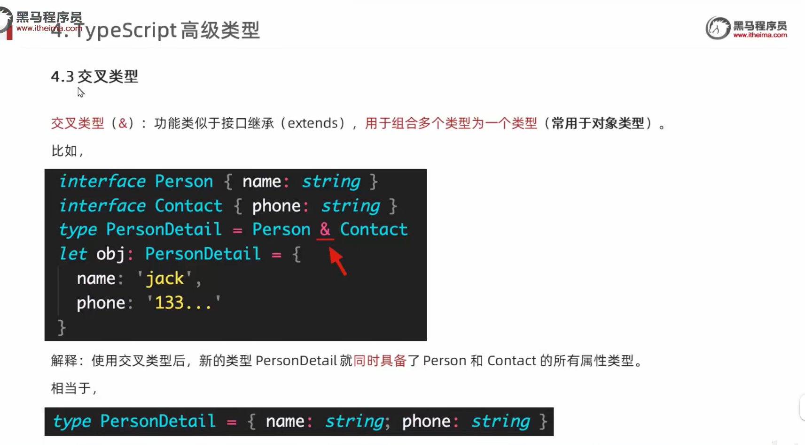

TS 语言主打的就是提供类型支持，并且能够根据变量类型，自动提示其拥有的属性和方法，没有该属性或方法时，会提示错误，帮助开发者在开发阶段就能够及时避免掉不必要的因为编写代码带来的错误问题。
官网下载即可，参考网上教程
xxxxxxxxxx11$ npm i -g typescript
这里已经可以手动编译 - 运行 ts 文件了，但是下面介绍了一个比一个更方便的工具
xxxxxxxxxx21$ tsc app.ts # 编译生成 app.js 文件2$ node app.js # 运行编译生成的 app.js 文件xxxxxxxxxx41$ $ tsc app.ts -w # 可以对 app.ts 单个文件开启实时变化监视，只要内容变化就自动编译2# 在当前创建的项目根目录下，创建一个 tsconfig.json 文件，里面写一个花括号 {} 即可执行下面的命令来编译该项目目录下的所有 ts 文件啦3$ tsc # 第一种方式：就会自动编译该项目目录下的所有 ts 文件了，但不会根据内容变动实时编译4$ tsc -w # 第二种方式：开启监视模式，就可以根据所有 ts 文件内容变动实时编译出新的 js 文件啦
xxxxxxxxxx21$ npm i -g ts-node # 看似可以直接运行 ts 文件，不用生成 js 文件2$ ts-node app.ts # 不用编译生成对应的 app.js 文件，背后悄悄生成编译文件，然后直接输出结果
xxxxxxxxxx21$ npm i -g nodemon # 可以实时监控 ts 文件的变更并输出结果2$ nodemon app.ts # 开始监控并编译运行该 ts 文件
tsconfig.json 配置文件ts文件需要被编译,否则默认当前目录下除了exclude之外所有.ts, .d.ts,.tsx文件tsconfig.json文件路径，来继承这个配置文件里的配置，继承文件的配置会覆盖当前文件定义的配置compilerOptions： 编译器选项xxxxxxxxxx721{2 /* 编译器的配置选项:3 编译结果的版本目标："target": "es5"4 指定使用的模块化规范: "module": "es2015"5 */6 "compilerOptions": {7 "target": "esnext", // 指定编译后的ECMAScript版本8 "module": "esnext", // 指定要使用的模板标准9 "outDir": "./dist", // 指定编译后生成的文件所在目录1011 "allowJs": false, // 是否对项目中的 js 文件进行编译, 默认 false12 "checkJs": false, // 是否检查 js 文件代码是否符合语法规范, 默认 false13 "removeComments": false, // 是否移除注释14 "noEmit": false, // 不生成编译后的文件15 "noEmitOnError": true, // 当有错误时不生成编译后的文件1617 "strict": true, // 所有严格检查的总开关,写了这个, 下面的严格配置都不用再写了1819 "alwaysStrict": true, // 用来设置编译后的文件是否使用严格模式, 默认 false20 "noImplicitAny": true, // 不允许隐式的 any 类型21 "noImplicitThis": true, // 不允许不明确类型的 this22 "strictNullChecks": true, // 严格检查空值, 比如获取的对象不存在，就不能使用它的方法23 2425 // "outFile": "./dist/app.js", // 将编译后的文件内容都整合到一个文件，一般结合打包工具使用26 "jsx": "preserve", // 指定jsx代码用于的开发环境27 "allowJs": true, // 允许编译JS28 "sourceMap": true, // 用来指定编译时是否生成.map文件29 "strict": true, // 严格模式30 "moduleResolution": "node",//用于选择模块解析策略，有'node'和'classic'两种类型31 "forceConsistentCasingInFileNames": false, //是否强制代码中使用的模块文件名必须和文件系统中的文件名保持大小写一致32 "allowSyntheticDefaultImports": true, //指定允许从没有默认导出的模块中默认导入33 "strictFunctionTypes": false, //用来指定是否使用函数参数双向协变检查34 "esModuleInterop": true, //为导入内容创建命名空间，实现CommonJS和ES模块之间的互操作性35 "resolveJsonModule": true, //包含导入的模块.json的扩展。36 "noUnusedLocals": false, // 用于检查是否有定义了但是没有使用变量37 "noUnusedParameters": true, // 用于检测是否在函数中没有使用的参数38 "useDefineForClassFields": true, //将 class 声明中的字段语义从 [[Set]] 变更到 [[Define]]39 "experimentalDecorators": true, // 用于指定是否启用实验性的装饰器特性40 "noImplicitAny": false, // 不允许变量或函数参数具有隐式any类型41 "skipLibCheck": true, // 用来控制是否在编译时进行库文件检查的42 // 指定要包含在编译中的库文件,如未指定会根据target注入默认列表，一般不需要动这个选项！！！43 /* "lib": [44 "esnext",45 "dom",46 "dom.Iterable"47 ], */48 // 用来指定需要包含的模块，只有在这里列出的模块声明文件才会被加载进来49 "types": [],50 // 用于设置解析非相对模块名称的基本目录，相对模块不会受到baseUrl的影响51 "baseUrl": ".",52 // 用于设置模块名到基于baseUrl的路径映射53 "paths": {54 "@/*": [55 "src/*"56 ]57 },58 },59 // 指定需要编译文件,否则默认当前目录下除了exclude之外的所有.ts, .d.ts,.tsx文件60 /* include: 指定哪些 ts 文件需要被编译61 路径： ** 表示任意目录62 * 表示任意文件63 */64 "include": [65 "./src/**/*",66 ],67 /* exclude 用来排除哪些 ts 文件目录不需要被编译 */68 "exclude": [69 "./src/hello/**/*",70 "node_modules",71 ],72}
webpack 打包工具的使用xxxxxxxxxx11$ npm init -yxxxxxxxxxx11$ npm i -D webpack webpack-cli typescript ts-loader @babel/core @babel/preset-env babel-loader core-js webpack-dev-server html-webpack-plugin clean-webpack-plugin less less-loader css-loader style-loader postcss postcss-loader postcss-preset-envxxxxxxxxxx1101/*2* @Author: BestRivenNA3* @Date: 2023-11-16 10:05:214* @FileName: webpack.config.js5*/6const path = require('path')7const HTMLWebpackPlugin = require('html-webpack-plugin')8const { CleanWebpackPlugin } = require('clean-webpack-plugin')910module.exports = {11 // 指定入口文件12 entry: "./src/index.ts",13 // 指定打包文件输出配置14 output: {15 // 指定打包文件的目录16 path: path.resolve(__dirname, 'dist'),17 // 打包后的文件名18 filename: "bundle.js",19 // 告诉 webpack 打包后的文件不使用箭头函数20 environment: {21 arrowFunction: true, // 编译生成文件是否使用箭头函数，默认是true，可以改成false22 const: true, // 编译生成文件是否使用const关键字，默认是 true，可以改成false23 }24 },25 // 指定 webpack 打包时要使用的模块26 module: {27 // 指定要加载的规则28 rules: [29 {30 // test 指定的是规则生效的文件31 test: /\.ts$/,32 // 要使用的 loader33 use: [34 // 高级配置35 {36 // 指定加载器37 loader: "babel-loader",38 // 设置 babel 具体配置选项39 options: {40 // 设置预定义的环境41 presets: [42 [43 // 指定环境的插件44 "@babel/preset-env",45 // 配置信息46 {47 // 要兼容的目标浏览器48 targets: {49 "chrome": "88"50 },51 // 指定 corejs 版本52 "corejs": "3",53 // 使用 corejs 的方式 "usage" 表示按需加载54 "useBuiltIns": "usage"55 }56 ]57 ]58 }59 },60 // 'babel-loader', // 简单配置61 'ts-loader'62 ],63 // 要排除的文件64 exclude: /node_modules/65 },66 // 配置 less 预处理器67 {68 test: /\.less$/,69 use: [70 "style-loader",71 "css-loader",72 // 引入 post73 {74 loader: "postcss-loader",75 options: {76 postcssOptions: {77 plugins: [78 [79 "postcss-preset-env",80 {81 browsers: "last 2 versions"82 }83 ]84 ]85 }86 }87 },88 "less-loader"89 ],90 exclude: /node_modules/91 }92 ]93 },94 // 配置 webpack 插件95 plugins: [96 new CleanWebpackPlugin(),97 // 自动生成 html 文件，并将打包的 js 文件引入98 new HTMLWebpackPlugin({99 // title: "欢迎来到德莱联盟...",100 template: "./src/index.html"101 }),102 ],103 // 原来设置引用模块104 resolve: {105 extensions: ['.ts', '.js']106 },107 mode: "development", // Set 'mode' option to 'development' or 'production'108}109110
xxxxxxxxxx91// 项目根目录下创建 tsconfig.json2{3 "compilerOptions": {4 "target": "ES2015",5 "module": "ES2015", //编译生成的模块采用哪个版本的标准6 "strict": true, // 开启严格模式7 "noEmitOnError": true, // 当 ts 文件有错误时不进行编译8 }9}
xxxxxxxxxx81// 项目根目录的 package.json 文件中的该选项添加如下内容：2"scripts": {3 "test": "echo \"Error: no test specified\" && exit 1",4 // "dev": "webpack serve --open", // 会自动用默认浏览器打开项目的 html 入口文件5 "build": "webpack", // 添加命令别名，通过 npm run build 即可打包6 "dev": "webpack-dev-server --open", // 这个也行，跟上面的意义7 "start": "webpack --watch", // 实时监视文件变动进行打包8 },nodejs 工具npx
使用在线命令行工具完成一些操作，
npx的作用是在命令行中运行node包中的可执行文件,而不需要全局安装这些包。这可以使开发人员更轻松地管理包的依赖关系*,并且可以避免全局污染的问题。
nrm
用命令快速『查看』和『设置』NPM 镜像
tsc
该工具还需要下载
npm i -g typescript, 配合typescript包一起工作，完成ts编译任务
nodemon
该工具还需要下载
npm i -g typescript, 配合typescript包一起工作，可以根据内容变动实时完成ts编译和运行结果
通过
webpack-dev-server打包后的代码并不会出现在dist目录中，而是直接创建了一个开发服务器，同时运行打包的代码。
webpack打包通常分为两种模式：开发模式（development）和生产模式（production）
- 开发模式：开发时使用
webpack-dev-server，代码自动打包、自动打开浏览器、自动刷新都可以实现自动化，提高开发效率。- 生产模式：在代码最终上线时使用，只需要使用到最基本的打包功能，最终打包后的代码会进入到
dist目录中，然后上传服务器即可
static
用
static修饰的属性或方法是类静态属性或方法，实例方法不能访问
readonly
用
readonly修饰的属性或方法表示只读而不能修改
xxxxxxxxxx131class Person {2 name: string = '八戒'3 static readonly age: number = 1000045 static sayHi () {6 console.log('大家好 我是孙悟空!')7 }8}910const per = new Person()11console.log(per.name);12// console.log(per.age); // 错误，访问不了 13console.log(Person.age);
abstract 抽象类
可以定义普通方法和抽象方法的结构
xxxxxxxxxx61abstract class Animal {2 name: string3 4 sayHi (): void5 abstract sayGoodby(): void6}
xxxxxxxxxx211class Person {2 private _name: string // 这里用下划线创建属性： ts 知道是属性 name3 private _age: number4 5 constructor (name: string, age: number) {6 this._name = name7 this._age = age8 }910 // 属性访问器: get 属性名 () { } 可以为该属性创建获取属性值的方法，在 p.name 获取值时就是调用该 get 方法11 get name() {12 return this._name // 访问器必须返回值13 }14 // 属性设置器: set 属性名 (value) { } 设置该属性的值，该方法在赋值时，如 p.name = '' 会自动调用该 set 方法15 set name(value: string) {16 this._name = value17 }18}1920const per = new Person('周星驰', 20)21per.name = '李小龙'
| 类型 | 例子 | 描述 |
|---|---|---|
| number | 1, -33, 2.5 | 任意数字 |
| string | "hello", 'book' | 任意字符串 |
| boolean | true, false | 布尔值 true 或 false |
| 字面量 | 字面量值本身 | 限制变量的值就是该字面量的值 |
| any | * | 任意类型 |
| unknown | * | 类型安全的 any |
| void | 空值（undefined） | 没有值（或 undefined ） |
| never | 没有值 | 不能是任何值 |
| object | { name: 'jack' } | 任意的 JS 对象 |
| array | [1, 2, 3] | 任意 JS 数组 |
| tuple | [4, 5] | 元组，TS新增类型，固定长度数组 |
| enum | enum { A, B } | 枚举，TS中新增类型 |
xxxxxxxxxx21# propName 表示可以传入的键名是字符串，值可以是任意值2let c: { name: string, [propName: string]: any }
xxxxxxxxxx11Array、Object、Function
xxxxxxxxxx21// 自定义变量类型：可以是 string，也可以是 number2let a: string | number;
xxxxxxxxxx41// 定义类型别名2type CustomType = (number | string)[];3// 定义变量时，直接使用类型别名注明 变量的类型4let arr: CustomType = [1, 2, 3, 'hello'];
xxxxxxxxxx51// 可选参数2// 注意： 必选参数不能位于可选参数后面3function add(num1?: number, num2?: number): number {4 return num1 + num2;5}
xxxxxxxxxx51let person: {2 name: string3 age: number4 sayHi(): void5}
注意 interface 和 type 的区别
xxxxxxxxxx131interface Person {2 name: string3 age: number4 sayHi(): void5}67let person: Person = {8 name: '',9 age: 1,10 sayHi() {11 12 }13}
xxxxxxxxxx81interface Point2D { x: number; y: number }2interface Point3D extends Point2D { z: number }34let p: Point3D = {5 x: 18,6 y: 28,7 z: 388}
九、元组
指明中括号里面某位置上的元素的类型，并且指明的类型的个数就代表着该列表需要多少个元素，这就变成了元组的概念——需要在指定位置上传入指定类型的值，并且个数不允许超过指定的个数。
xxxxxxxxxx31type Position = [number, number];2let position: Position = [1, 2]3console.log(position);
xxxxxxxxxx31// let aLink = <HTMLAnchorElement>document.getElementById('link') // 不推荐2let aLink = document.getElementById('link') as HTMLAnchorElement3console.log(aLink.href);
xxxxxxxxxx21let greet1 = 'Hello TS' // let 定义的是变量，所以变量类型是表示字符串的比较宽泛的 string 类型，当然也可以手动指定该变量的类型2const greet2 = 'Hello TS' // const 本身就是定义常量，所以 greet2 的类型就是后面的字符串字面量
xxxxxxxxxx61// enum 中枚举的值，默认从 0 开始标记变量2enum Direction { Up, Down, Left, Right}3function changeDirection (direction: Direction) {4 console.log(direction);5}6changeDirection(Direction.Right)
xxxxxxxxxx81let p = {2 x: 10,3 y: 204}5function watchPosition(point: typeof p) {6 console.log(point); // 用 typeof 检测出的类型来注解另一个变量的类型7}8watchPosition({ x: 12, y: 20})
xxxxxxxxxx111class Person {2 name: string; // 实例属性3 age: number; // 实例属性45 constructor (name: string, age: number) {6 this.name = name; // 初始化赋值7 this.age = age;8 }9}1011const p = new Person('zs', 18)
xxxxxxxxxx111interface Singable {2 sing(): void3}4class Person implements Singable {5 sing(): void {6 console.log('我会唱歌!');7 }8}910const p = new Person()11p.sing()
简单类型
复杂类型

- Partial
- Readonly
- Pick<Type, Keys>
- Record<Keys, Type>